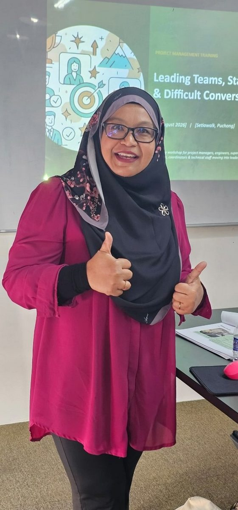
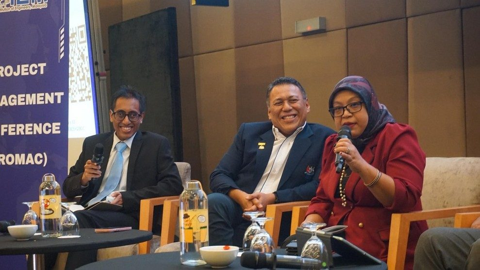
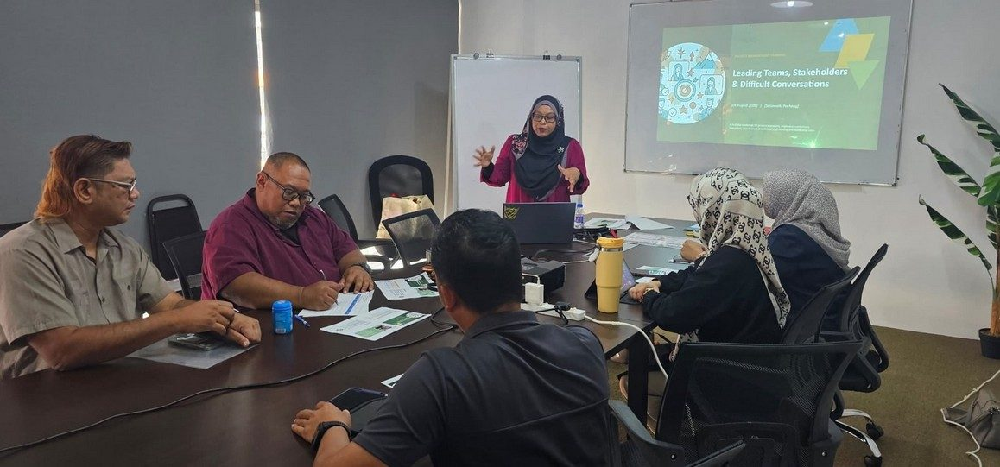
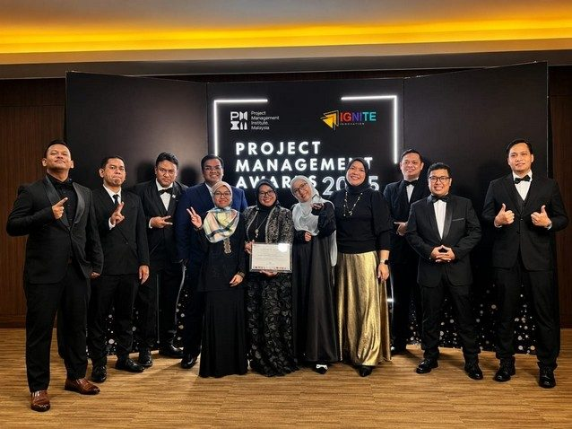
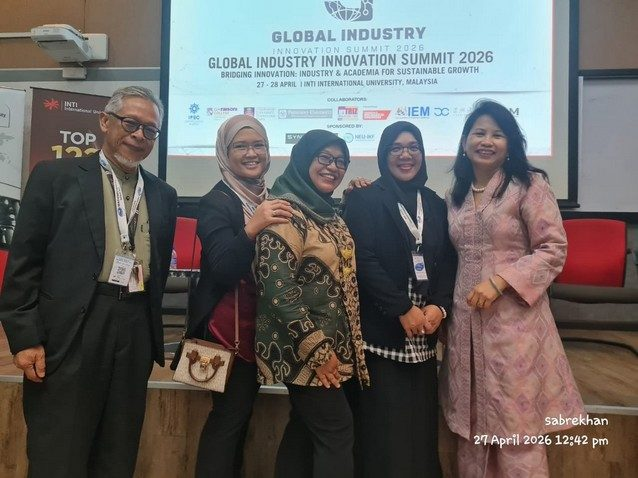

Grit
Push through with what you believe is best, after weighing the risks and thinking two steps ahead.
Training and advisory for leaders who have to deliver under pressure. Taught by someone who spent more than 20 years running airport engineering and projects at Malaysia Airports.

"When a team brings resilience, courage and passion together, there is no challenge too great and no goal out of reach."The mantra behind the five-year KLIA Aerotrain replacement, from business case to revenue service on 30 June 2025
The name comes from that mantra. Behind it sits sabr (صبر), the root of the name Sabrena: patience and perseverance, which is what grit looks like over five years.
Push through with what you believe is best, after weighing the risks and thinking two steps ahead.
Know when to step back and take time for the right decision, using intuition as well as logic.
Keep the passion through the hard days, and celebrate each milestone with the team.
Every programme uses real cases from airport and rail projects, with exercises participants apply to their own work. All run in English or Bahasa Melayu, in-house or public, and are HRD Corp claimable through partner training providers.
Read the real warning signs early, make decisions you can defend under pressure, and lead people and stakeholders through recovery. Ends with a live crisis simulation.
Step back from daily firefighting, set clear priorities, test them against future scenarios and pitch them to management in two minutes.
Keep the team focused under pressure, map stakeholders, and turn difficult conversations and supplier disputes into agreed actions.
Pick one small digital win, simplify the process first, and build a working tracker or dashboard with free tools.
The same experience that goes into the training is available for project work.








Ir. Ts. Dr. Bibi got the entire team from client, consultants and contractors to see one vision to deliver the project.
She consistently challenged me to think beyond conventional solutions and focus on long-term value rather than quick wins.
A very fruitful session to know the real industries experience for an amazing and important project, Aerotrain KLIA.
As Project Director, she demonstrated strong leadership, extensive project knowledge and the ability to manage complex challenges while bringing different stakeholders together.
She was instrumental in driving digitalisation and process improvements within our engineering team, particularly the development of in-house Engineering Asset Performance Dashboards.
Course outlines and training plans are ready for HRD Corp submission. Tell us about your team and we will suggest the right format.